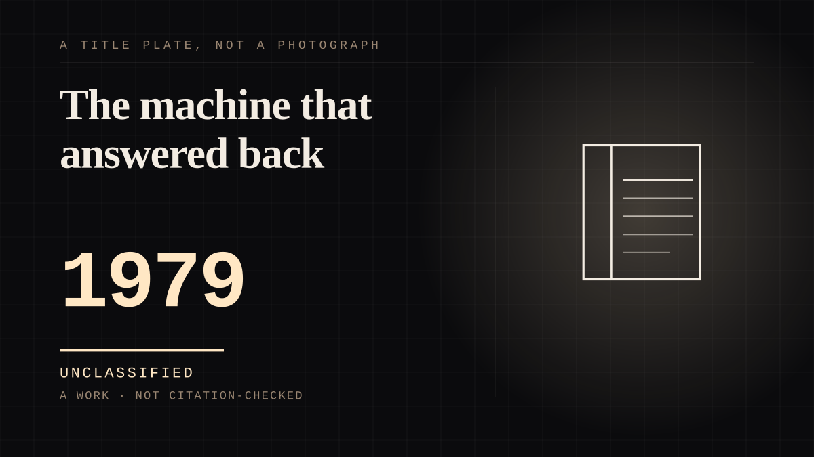

A work · 1979 ·
The machine that answered back
The answering machine is an object with no agency that behaves like a person who has not decided to hear you.

It is the sharpest ordinary object on this site, because it is a device that received an emotional appeal and returned a light. Nobody speaks to an answering machine believing it understands. Millions speak to one anyway, and the moment of checking whether it picked up is a small, repeated, completely irrational hope - which is what the object shelf is for. The attachment is to a thing that cannot disappoint, because it cannot act, and that is exactly why the attachment costs nothing to maintain and cannot be renegotiated.
Where it sits
1950 1950-1999 · 1979 1999
Connected · 2 out, 0 in
It sits in
The full timeline → · The database → · See it in the atlas →